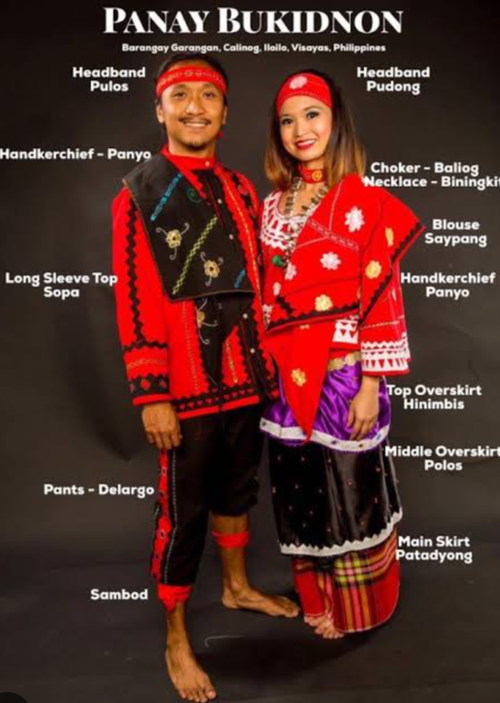

The name Panay-Bukidnon came from two Hiligaynon words —- Panay and Bukidnon. Panay refers to Panay island where they originated and Bukidnon refers to the local natives in the mountainous area of the island. They have their own culture and customary law. They also have their own political system lead by their tribe masters.
Binanog Dance
Panay-Bukidnon is very famous for their Binanog dance. It is a courtship dance in which the dancers imitate the actions of a hawk. The music is led by an agong ensemble which is played by the tribe members. The dancers make use of long handkerchiefs to manifest their motives with their partners.
Panubok
"Panubok, from the word "tubok," is the traditional embroidery of the Panay Bukidnon which patterns and designs reflect shapes and objects from the environment, where the Panay Bukidnon draw their inspiration from.
The designs and patterns are incorporated on their traditional clothes, on bracelets, and many more. This surviving art has been passed on to many generations and is still being learned by the young of the Panay Bukidnon indigenous peoples communities.
Traditional Costume
PANAY BUKIDNON ATTIRE - is the traditional wear of the indigenous people of Panay Island. Mainly accentuated with patterns & designs of panubok, a traditional embroidery. The designs reflect shapes & objects from the environment such as sikag-sikag (fishbones), matam-punay (bird’s eye) and sodle-kama (snake’s skin). Headband for male is called pulos while the long sleeve top is sopa. The female wear's blouse is called saypang & the main skirt is patadyong made from hablon.

Festival
One of the Calinog province most distinctive and genuine events, honoring the region's unique culture and heritage.
Each part of the performance is based on either the pre-Hispanic celebration of Sulodnons or Panay Bukidnons, or on the Catholic tradition associated with Sr. Sto. Niño's feast day. Suguidanon and Hirinugyaw make up the first and last sections of the course.